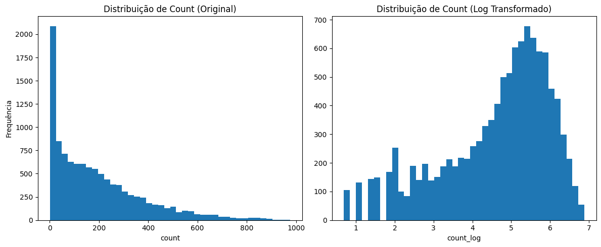
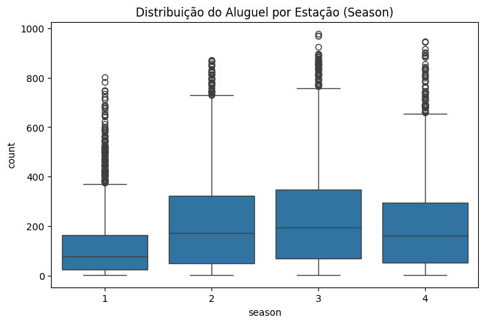
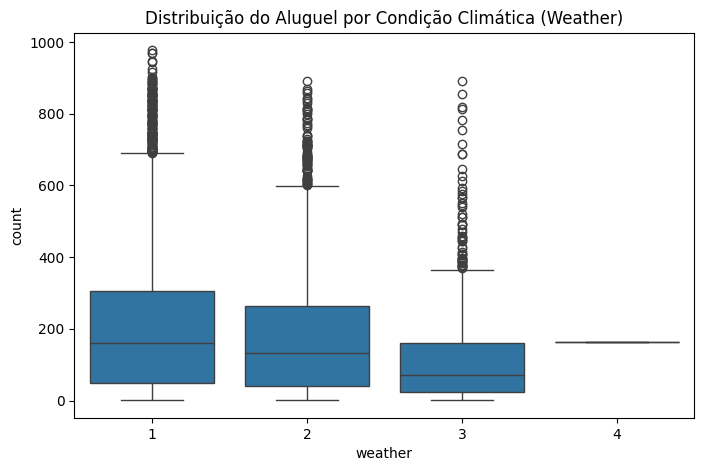
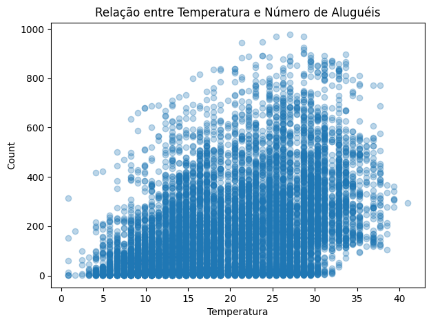
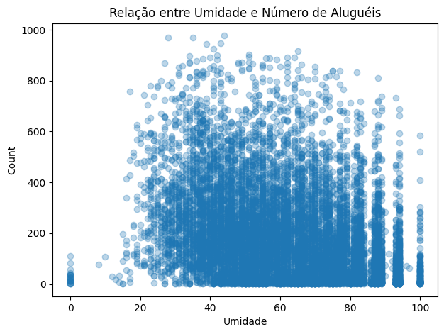
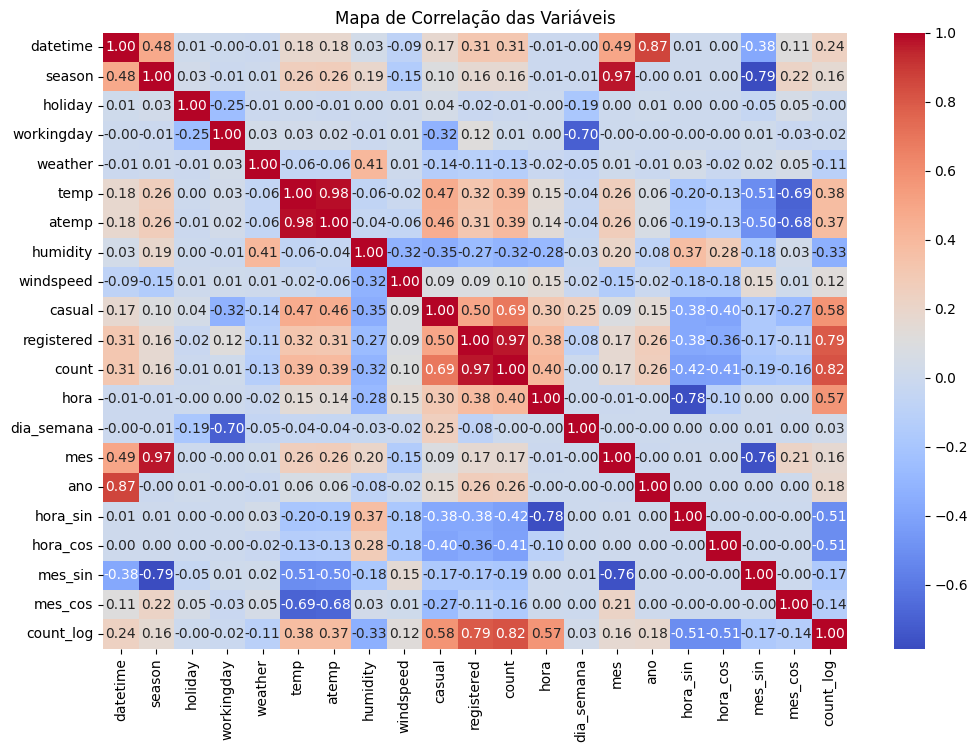
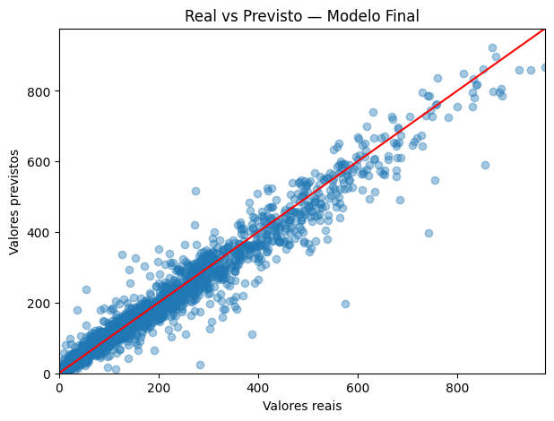

O Impacto da Engenharia de Features Temporais
Na Previsão de Demanda de Bicicletas
Disciplina: Pré-processamento de Dados
Autores:
Lucas Edson
Djefferson dos Santos
João Pessoa - PB | Novembro 2025
1. O Problema
Desafios na previsão de demanda (Bike Sharing):
- Dados Brutos: Contêm ruídos e escalas incompatíveis.
- Natureza Temporal: Padrões complexos (hora, dia, estação).
- Distribuição: Dados reais são altamente assimétricos.
Objetivo: Provar que o Pré-processamento é mais impactante que a escolha do algoritmo.
2. Preparação do Target

Antes: Assimétrico
Depois: Normalizado (Log)
- A distribuição original (esquerda) prejudica o aprendizado do modelo.
- Aplicamos
log(count + 1)para normalizar os dados. - Isso alinha o alvo com a métrica de avaliação RMSLE.
3. Análise Sazonal
Por Estação

Por Clima

- Estações: Demanda cai levemente na Primavera (1).
- Clima: Condições severas (4 - Chuva Forte/Neve) praticamente zeram a demanda.
- O modelo precisa aprender a penalizar dias de clima ruim.
4. Variáveis Contínuas

Temperatura

Umidade
- Temperatura: Correlação positiva clara. Pico de uso entre 20°C e 30°C.
- Umidade: Correlação negativa. Preferência por dias mais secos.
5. Mapa de Correlação
- Forte correlação entre
registerede o targetcount(0.97). - Redundância detectada entre
MontheSeason.
6. O "Pulo do Gato": Engenharia Temporal
Como o modelo entende que 23h é vizinho de 00h?
# Transformação Cíclica (Seno e Cosseno)
# Transforma o tempo linear em coordenadas circulares
df['hora_sin'] = np.sin(2 * np.pi * df['hora']/24)
df['hora_cos'] = np.cos(2 * np.pi * df['hora']/24)
- Sem isso, o modelo acha que 0 e 23 são distantes.
- Também aplicamos OneHotEncoder para remover ordem artificial de categorias.
7. Resultados Obtidos
Melhoria de 76.19%
O erro caiu drasticamente apenas melhorando os dados.
8. Validação do Modelo

Real vs Previsto
 Resíduos
Resíduos
- Real vs Previsto: Forte alinhamento na diagonal (alta precisão).
- Resíduos: Distribuição normal centrada em zero (sem viés sistemático).
Conclusão
✅ Dados > Algoritmo: O tratamento adequado dos dados teve mais impacto que a complexidade do modelo.
✅ Ciclicidade: Capturar a natureza circular do tempo (Seno/Cosseno) foi fundamental.
✅ Impacto Prático: Um modelo com erro de 0.30 é viável para uso em produção e planejamento logístico.